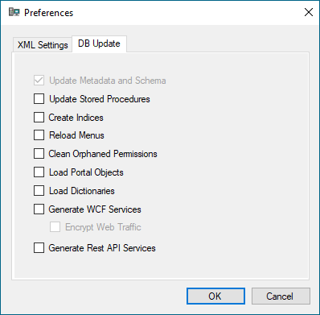

Applying Designer Changes and Maintaining Designer Users
Changes made to the factory model using Designer are recorded in the InSite.mdb, a Microsoft Access file. Following that process, you need to propagate the changes to the transaction database, Siteinfo.mdb, and if applicable, to the DataStore database.
Each time you make changes using Designer, you must apply these changes to your transaction and DataStore databases. You do this by:
| • | Clicking the Update DB button in the toolbar. |
Or
| • | Performing the Update Database task in Management Studio. |
Changes are applied to the highest active workspace set in Management Studio. The Designer header displays a workspace code and description indicating which workspace changes are being applied to. Refer to "Designer Header" for information.
You can utilize a mass update setup for performing transactions on large sets of data, such as when processing a large number of containers or one large batch transaction. Contact Product Support via Support Center for assistance configuring Designer to utilize mass updates.
For more information
Refer to the Opcenter Execution Medical Device and Diagnostics System Administration Guide or the Opcenter Execution Core System Administration Guide for more detailed information .
The application saves the current MDB file and updates the database according to the settings in the Preferences dialog box when you click the Update DB button. A confirmation dialog box appears indicating that the application will save the current MDB file and update the database according to the settings in the Preferences dialog box. You access the Preferences dialog box in the File menu.
This image shows an example of the Preferences dialog box, DB Update tab.

This table defines the check boxes on the Preferences dialog box, DB Update tab.
You use the Designer User Administration window in Management Studio to maintain Designer users. Refer to the Opcenter Execution Medical Device and Diagnostics System Administration Guide or the Opcenter Execution Core System Administration Guide for information about adding and deleting Designer users.